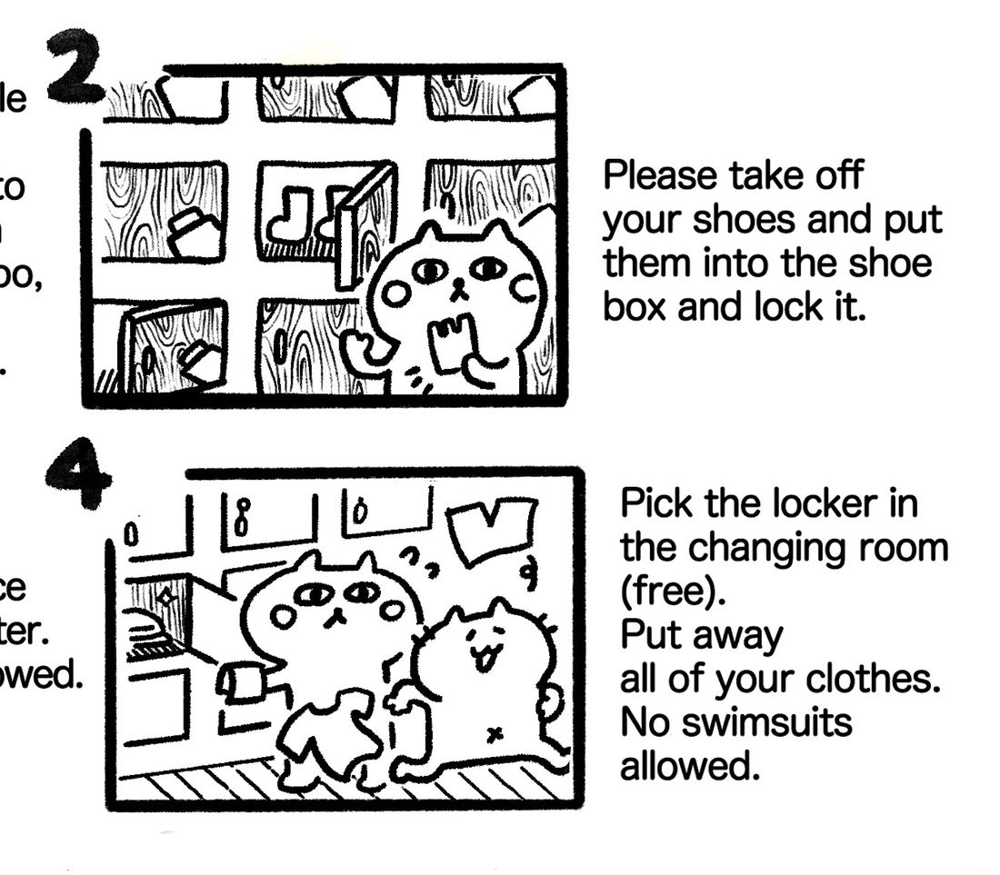
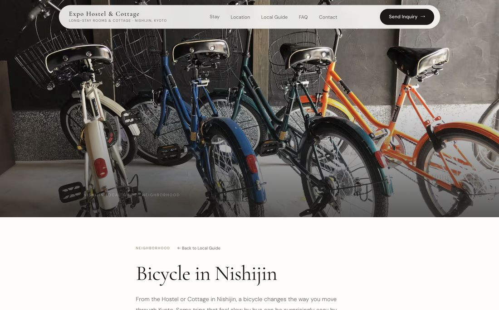
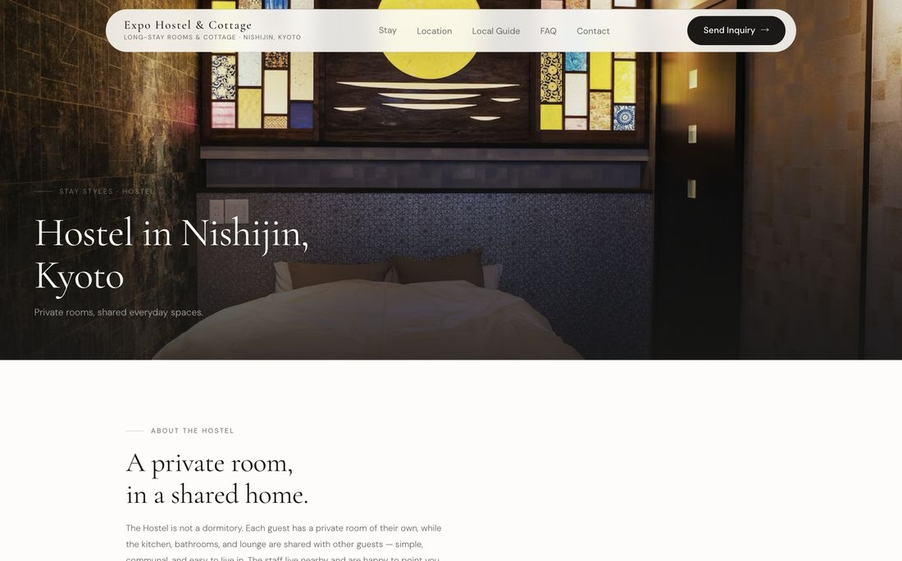
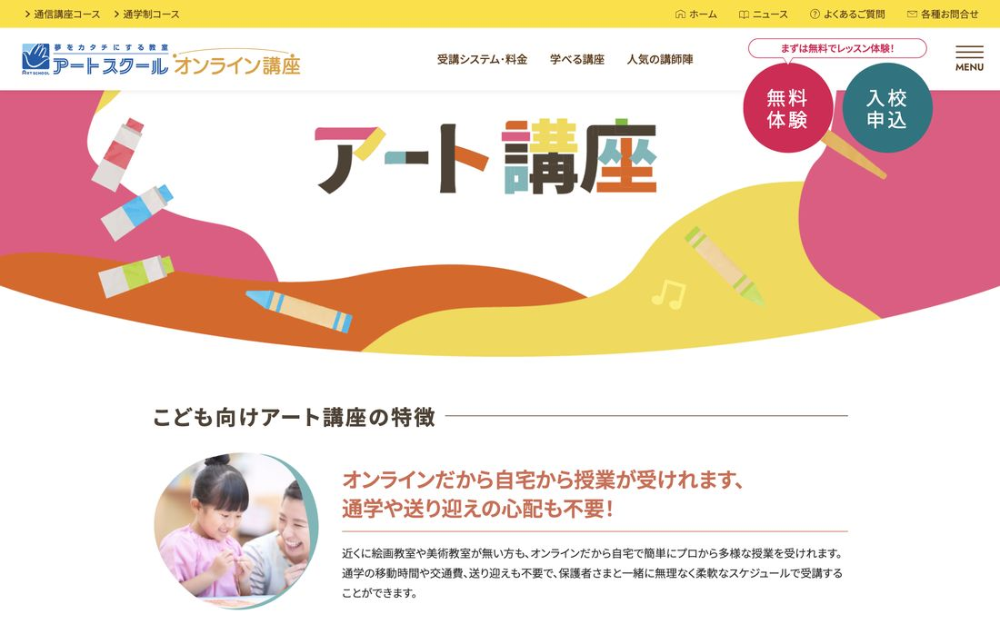
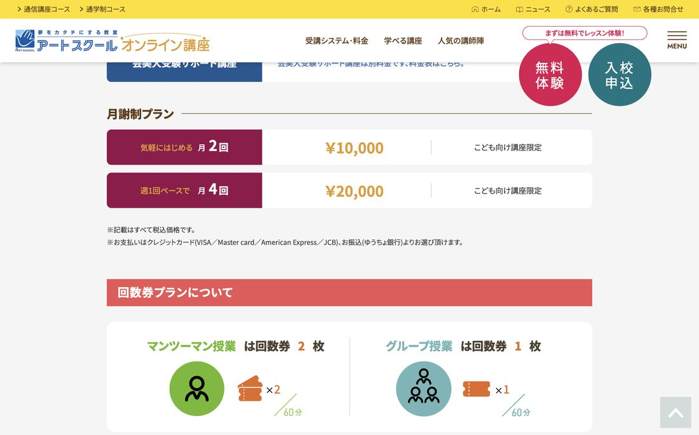
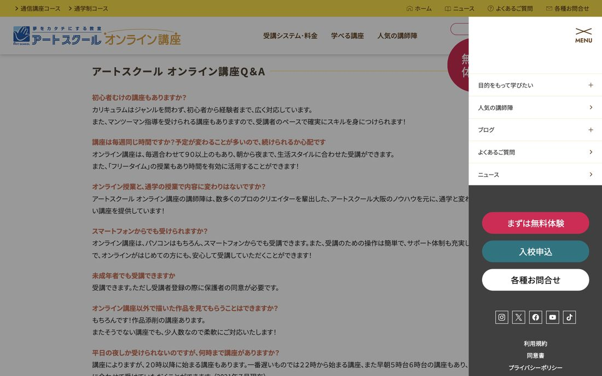

国際ゲスト対応 / 案内情報の整理GUEST SUPPORT
情報整理 / 案内資料の作成 / ゲストコミュニケーション
- 海外ゲストからは、似たような質問や困りごとが日々のやり取りの中で繰り返し寄せられていました。
- そうした情報をもとに、銭湯の入り方、日常会話フレーズ、チェックイン・宿泊案内などの資料を作成・整理。
- まとめた資料は、その後のゲスト対応や日々の運用の中でも活用しています。
米山佳穂
Web・コンテンツ / 海外ゲスト対応
京都の宿泊施設で、海外ゲスト対応を中心に、Webサイト制作・更新や案内情報の整理などを担当しています。
Featured Work

情報整理 / 案内資料の作成 / ゲストコミュニケーション

構成再設計 / 多言語サイト運用 / 保守性の向上 / 継続的な更新



情報設計 / コピーライティング / 写真選定 / HTML・CSS実装 / レスポンシブ対応 / 公開・運用


企画 / コンテンツ制作 / 投稿運用 / コミュニティ対応
Other Works / Commercial Design
実務で手がけたグラフィック・Webデザインの一部です。 異なる目的や条件に合わせて、情報を整理し、視覚表現に落とし込んできました。




情報整理 / LPデザイン / ビジュアルレイアウト
※実装は専任エンジニアが担当


LPメインビジュアル制作 / DTPデザイン
※掲載画像はチラシ用DTP。LP実装は専任エンジニアが担当。


グラフィックデザイン / イラスト提案
Digital Banners
ファッション、子ども向けアート講座、台湾観光、季節のギフトなど、異なる目的に合わせて制作したバナーです。


Web / Content
Guest Communication
Documentation / Operations
Design
AI Tools
Language
About

米山佳穂 / Kaho Yoneyama
台湾で約3年間日本語教師として勤務。帰国後はWeb・グラフィックデザインの実務を経験し、 現在は京都の宿泊施設で海外ゲスト対応、Webサイト制作・更新、案内情報の整理などを担当しています。